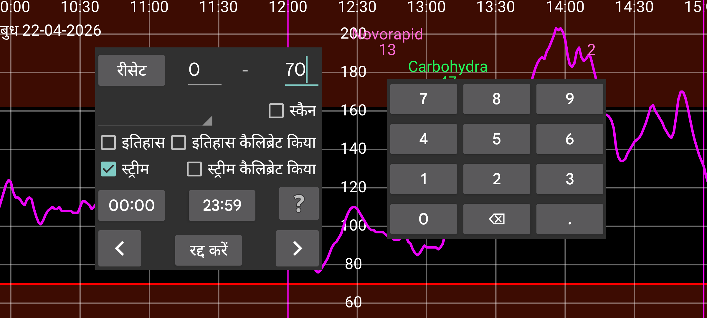

ar be de es fr hi it ja ko nl pl pt ru tr uk uz zh en
खोज का उपयोग ग्लूकोज मान और दर्ज की गई संख्याएं खोजने के लिए किया जा सकता है।
आप दी गई संख्याओं के बीच मान खोजते हैं। उदाहरण के लिए: 10 और 999 के बीच के मान खोजने के लिए 10 – 999।
ग्लूकोज मान स्कैन, इतिहास और स्ट्रीम में अलग किए गए हैं।
स्कैन: स्कैन करने के तुरंत बाद दिखाया गया मान। कच्चे स्कैन के लिए खोजें।
इतिहास: कच्चे इतिहास मानों के लिए खोजें। (सेंसर पर सहेजे गए और इस ऐप में स्थानांतरित किए गए आवधिक मापन। Freestyle Libre 2 सेंसर हर 15 मिनट में एक मान सहेजते हैं और उन्हें NFC के माध्यम से इस ऐप में स्थानांतरित करते हैं। Freestyle Libre 3 सेंसर हर 5 मिनट में एक मान सहेजते हैं और उन्हें ब्लूटूथ के माध्यम से स्थानांतरित करते हैं।)
इतिहास कैलिब्रेटेड: कैलिब्रेटेड इतिहास मानों के लिए खोजें।
स्ट्रीम: कच्चे स्ट्रीम मानों के लिए खोजें (Freestyle Libre 2 सेंसर से इस ऐप को ब्लूटूथ द्वारा भेजे जाने वाले 1 मिनट के आवधिक मापन)।
स्ट्रीम कैलिब्रेटेड: कैलिब्रेटेड स्ट्रीम मानों के लिए खोजें।
यदि आपने इंसुलिन, उपभोग या गतिविधि डेटा दर्ज किया है, तो आप स्पिनर में संबंधित लेबल चुनकर उन्हें खोज सकते हैं और उन संख्याओं की सीमा निर्दिष्ट कर सकते हैं जिनमें आप रुचि रखते हैं: उदाहरण के लिए 50 और 100 के बीच साइक्लिंग।
आप दिन का समय भी निर्दिष्ट कर सकते हैं जिसमें आप रुचि रखते हैं। यदि आप शाम 22:00 और सुबह 07:00 के बीच हाइपो (निम्न ग्लूकोज) में रुचि रखते हैं, तो आप पहले समय डिस्प्ले (शुरुआत में 00:00 दिखाया गया) पर दबाते हैं और इसे 22:00 में बदलते हैं और दूसरे समय डिस्प्ले को 07:00 में बदलते हैं (आपको स्ट्रीम और/या इतिहास भी चुनना होगा और 0 से 3.9 mmol/L (70 mg/dL) तक मान सीमा निर्दिष्ट करनी होगी)।
एक तीर को छूने से दी गई दिशा में खोज शुरू होती है।
रीसेट सभी खोज मानों को वही सेट करता है जो वे शुरुआत में थे।
सेटिंग्स में संख्या लेबल के तहत आप चुन सकते हैं कि कौन सा लेबल (उदाहरण कार्बोहाइड्रेट) भोजन से जुड़ा है। यदि आप "नई मात्रा" में यह लेबल चुनते हैं तो एक "भोजन" बटन उभरता है। छूने के बाद, आप एक भोजन को उसकी सामग्री से दर्ज कर सकते हैं। यदि आप स्पिनर में यहाँ यह लेबल चुनते हैं, तो स्क्रीन के शीर्ष पर एक बॉक्स उभरता है जहाँ आप खोजने के लिए एक सामग्री और वैकल्पिक रूप से उस सामग्री की न्यूनतम मात्रा निर्दिष्ट कर सकते हैं।